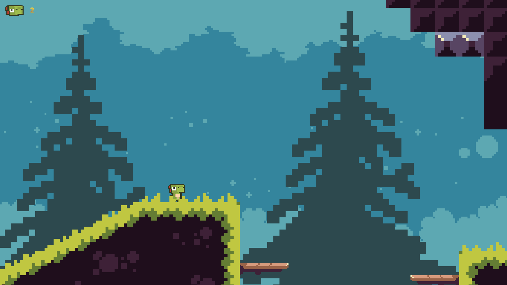

Dino Adventure

A installer sur PC uniquement
Tu peux choisir la difficulté dans les options, appuyer sur 'Echap' pour ouvrir le menu en jeu et 'E' pour parler au NPC
Pour se déplacer il faut utiliser les flèches directionnelles ou 'q' et 'd' et 'Espace' ou la flèche directionnelle du haut pour sauter
Merci de me donner votre avis, j'en ai vraiment besoin pour pouvoir améliorer le jeu, que ce soit en terme d'équilibrage(Vitesse des mobs, spawn trop lent des rochers etc ...)
Vous pouvez aussi m'avertir si vous trouvez des bugs, vous devez lancer le .exe 'Project Platformer 2D Solo.exe'
Bon jeu !
Téléchargement
Dino Adventure V1.0
Dino Adventure V1.1
Dino Adventure V1.2